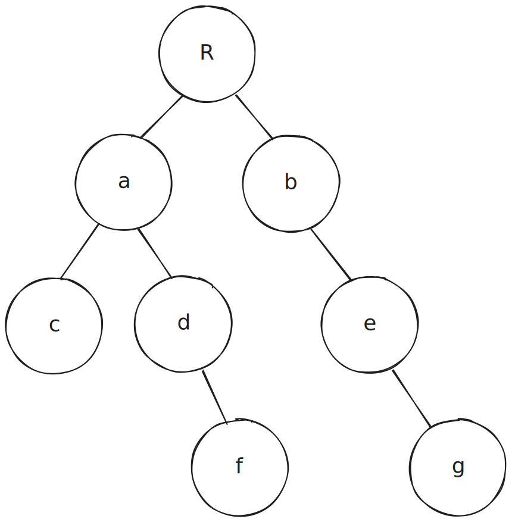

Prerequisite knowledge
This article assumes that the reader has some knowledge in data structure and algorithms in computer science, specifically the tree data structure and tree traversal. A knowledge in formal grammar would be of great help since it introduces what a tree syntactically is.
Motivation
The primary motivation why such an idea was conceived is tree traversal without the need for explicit indexing of the tree nodes, nor the need to flatten a recursive list. As I try to solve such an issue, I sensed a link between tree traversal, tree indexing, and number systems with their basic arithmetic operations. The primary operations that I have stumbled upon are next(), last(), and prev(), which are further expounded within this article.
Disclaimer I have not yet performed a deep exploration regarding the originality of this topic, but it is highly probable that someone years ago has discovered this very topic, so at best, this is a re-exploration of index arithmetic for tree data structures in general. I will update this article if I have searched papers that discuss this topic.
Tree definition
We define a tree as having the following syntax:
<tree> : (<leaf> | <tree>)*
A tree in this case, is recursive, with the leaf as a terminal symbol. A leaf may be called a special type of tree in that it has zero children. In our graphical representation, we represent a tree as a node with zero or more children, connected with lines to represent which nodes their children are.
Suppose that we have the following tree. Let the top-most node be $R$, abbreviated as the root. We also have labeled the nodes for illustration purposes.

Node indexing
We can indirectly reference some node by referring the children of a tree by its index. The start of the index will be 1, as opposed to the usual programming convention of 0. This will simplify the arithmetic later in this article. Referencing the nodes relative to $R$:
a = R[1]
b = R[2]
c = R[1, 1]
d = R[1, 2]
e = R[2, 1]
f = R[1, 2, 1]
g = R[2, 1, 1]
Of course, it is also true that we can reference the nodes by some other nodes, for example:
f = d[1] = a[2, 1] = R[1, 2, 1]
It is also common sense that we will run into errors when accessing invalid indexes, for example, R[3], R[1, 2, 2], etc.
Index Arithmetic
Bounded Arithmetic
This notion of bounded arithmetic will be useful in index operations. To add a bound to a non-negative number (which is the standard number set for indexing a list or iterable in general), we add a non-negative number subscript to it to indicate an upper bound. Thus, for example, a bounded number $a_b$ means that $a$ cannot exceed $b$, otherwise it will be an overflow. There is an implicit lower bound to this bounded number: $a$ cannot be negative. For example, $4_5$ is a valid bounded number, while $4_3$ is an overflow, and $-1_3$ is an underflow.
We can then introduce increment and decrement operations to our number system, that is, add 1 and subtract 1 respectively. This is similar to basic arithmetic. An increment is represented by the formula $a_b + 1 = (a+1)_b$, while a decrement is represented as $a_b - 1 = (a-1)_b$.
next()
Let us first assume that we can add 1 to an index, in other words, some function next(tree).
next(R)
To demonstrate how next() works, we will traverse every node in the tree. Let us start with node $R$. We can index this node by $R[0_2]$. The zero index implies that nothing is being accessed in that node’s children, and thus referring to the parent node itself. The $2$ subscript means that the number of children in this node is two. In other words, this digit $0$ is a member of the set $\{0, 1, 2\}$ (in mathematical notation, $0 \in \{0, 1, 2\}$). When incrementing or decrementing, we always add the zero index as the last digit of the operand, as a way of foreseeing that a node might have some children.
Calculating $\mathrm{next}(R)$, we get:
| $0_2$ | |
|---|---|
| $+$ | $1$ |
| $=$ | $1_2$ |
The operand $1$ is implicitly understood as $1_2$, because this $1 \in \{0, 1, 2\}$. The index $R[1_2]$ is precisely the index for $a$. The index $[1_2]$ means that $a$ is the first child of two children of $R$.
next(a)
Recall that we have to add the zero index before beginning the operation. Node $a$ has two children, therefore the last digit would be $0_2$. Incrementing the index by 1:
| $1_2$ | $0_2$ | |
|---|---|---|
| $+$ | ($0$) | $1$ |
| $=$ | $1_2$ | $1_2$ |
Just like in regular addition, the higher digits are thought of having the value of zero, thus we effectively copy the higher digits to our sum. $R[1_2, 1_2]$ is the index for $c$. The index $[1_2, 1_2]$ means that $c$ is the first child of the two children of $R[1_2]$ or $a$.
next(c)
With the basic rules of addition, we can proceed computing for $\mathrm{next}(c)$, where $c$ is equal to $R[1_2, 1_2, 0_0]$. Suppose that we add the first digit with 1: the digit will overflow ($1_0$). To be more precise, this form of overflow is a partial overflow because a fix can be made: in this case, just like in regular multi-digit addition, we carry over the excess to the next digit. In the last digit, $0_0 + 1 = 0$. The sum of zero in this case has an unknown upper bound, so we do not denote a subscript to it. The remaining operations proceed normally.
| $1$ | |||
|---|---|---|---|
| $1_2$ | $1_2$ | $0_0$ | |
| $+$ | $1$ | ||
| $=$ | $1_2$ | $2_2$ | $0$ |
$R[1_2, 2_2, 0]$ or simply $R[1_2, 2_2]$ is the index of $d$.
next(d)
| $1_2$ | $2_2$ | $0_1$ | |
|---|---|---|---|
| $+$ | $1$ | ||
| $=$ | $1_2$ | $2_2$ | $1_1$ |
$R[1_2, 2_2, 1_1]$ corresponds to node $f$.
next(f)
| $1$ | $1$ | $1$ | ||
|---|---|---|---|---|
| $1_2$ | $2_2$ | $1_1$ | $0_0$ | |
| $+$ | $1$ | |||
| $=$ | $2_2$ | $0$ | $0$ | $0$ |
$R[2_2]$ corresponds to node $b$.
next(b)
| $2_2$ | $0_1$ | |
|---|---|---|
| $+$ | $1$ | |
| $=$ | $2_2$ | $1_1$ |
$R[2_2, 1_1]$ corresponds to node $e$.
next(e)
| $2_2$ | $1_1$ | $0_1$ | |
|---|---|---|---|
| $+$ | $1$ | ||
| $=$ | $2_2$ | $1_1$ | $1_1$ |
$R[2_2, 1_1, 1_1]$ corresponds to node $g$.
next(g)
| $1$ | $1$ | $1$ | ||
|---|---|---|---|---|
| $2_2$ | $1_1$ | $1_1$ | $0_0$ | |
| $+$ | $1$ | |||
| $=$ | $3_2$ | $0$ | $0$ | $0$ |
The highest digit cannot be further fixed, thus representing a full overflow. Therefore, $\mathrm{next}(g)$ does not exist. We can also call $g$ as the $\mathrm{last}()$ of $R$ or $\mathrm{last}(R)$.
The full traversal: $R, a, c, d, f, b, e, g$ is precisely a preorder traversal of the tree.
last()
Calculating the $\mathrm{last}()$ of a node is relatively simple, we get the “lastmost” node of a tree, that is, if a tree has children, pick the last child every time until we encounter a leaf.
We have inferred earlier that $\mathrm{last}(R) = g$. The process is as follows:
- The last child of $R$ is $b$.
- The last child of $b$ is $e$ (only child).
- The last child of $e$ is $g$ (only child).
- Since $g$ is a leaf, then this means that $\mathrm{last}(g) = g$, that is, the $\mathrm{last}(n)$ of some node $n$ is itself. To complete: $\mathrm{last}(R) = \mathrm{last}(b) = \mathrm{last}(e) = \mathrm{last}(g) = g$.
This process can be described as recursive, but of course, can be implemented iteratively.
Calculating $\mathrm{last}(a)$ should be easy: $\mathrm{last}(a) = \mathrm{last}(d) = \mathrm{last}(f) = f$. The $\mathrm{last}(c)$ is itself, $c$.
prev()
This is the reverse of the next() operation, where it is operationally represented as an index decrement. Starting from the last node $g$, we will traverse towards $R$.
prev(g)
We will also add the zero index when decrementing the index.
| $2_2$ | $1_1$ | $1_1$ | $0_0$ | |
|---|---|---|---|---|
| $-$ | $1$ | |||
| $=$ | ??? |
We cannot directly subtract 0 by 1. In effect, we have encountered a partial underflow. Just like in regular multi-digit subtraction, to fix this underflow, we “borrow 1” from the next digit. This procedure is safe relative to the next digit since we are not referring to any nodes with a zero index. Note that $0_0 + 1$ will result in an overflow, so we leave it be.
| $2_2$ | $1_1$ | $1_1 - 1 \rightarrow 0_1$ | $0_0 + 1$ | |
|---|---|---|---|---|
| $-$ | $1$ | |||
| $=$ |
Then we can subtract as normal. Note that $0_0 + 1 - 1 = 0_0$.
| $2_2$ | $1_1$ | $1_1 - 1 \rightarrow 0_1$ | $0_0 + 1$ | |
|---|---|---|---|---|
| $-$ | $1$ | |||
| $=$ | $2_2$ | $1_1$ | $0_1$ | $0_0$ |
$R[2_2, 1_1, 0_1, 0_0]$, or simply $R[2_2, 1_1]$ corresponds to node $e$.
prev(e)
This is similar to calculating $\mathrm{prev}(g)$
| $2_2$ | $1_1 - 1 \rightarrow 0_1$ | $0_1 + 1$ | |
|---|---|---|---|
| $-$ | $1$ | ||
| $=$ | $2_2$ | $0_1$ | $0_1$ |
$R[2_2]$ corresponds to node $b$.
prev(b)
Assuming that we follow the same steps as before, we will get the following.
| $2_2 - 1 \rightarrow 1_2$ | $0_1 + 1$ | |
|---|---|---|
| $-$ | $1$ | |
| $=$ | $1_2$ | $0_1$ |
This is incorrect, because $\mathrm{next}(R[1_2])$ or $a$ is not equal to $b$. This is because the $1_2$ references a subtree, where there exists $\mathrm{last}(a)$. Therefore, $\mathrm{prev}(b) = \mathrm{last}(a)$.
In general, if we borrow from the next digit and the resulting value is not zero, we will effectively “rewrite” the proceeding terms with the last of the digit where we borrowed 1 from, including the zero digit, and add 1 to that last digit, before subtracting by 1. This rewriting effectively retrieves the last of the previous sibling node, and add 1 to the index.
Rewriting the operand step by step $\mathrm{last}(a) = a[2_2, 1_1] = R[1_2, 2_2, 1_1, 0_0] = f$. To complete the essence of subtraction (although we can stop by declaring that $\mathrm{prev}(b) = f$), we add 1 to the last digit and subtract it by 1.
| index of node $b$ | $2_2$ | $0_1$ | ||
|---|---|---|---|---|
| retrieve $\mathrm{last}(R[1_2]) = f$ | $2_2 - 1 \rightarrow 1_2$ | $2_2$ | $1_1$ | $0_0$ |
| add 1 to last digit | $1_2$ | $2_2$ | $1_1$ | $0_0 + 1$ |
| $-$ | $1$ | |||
| $=$ | $1_2$ | $2_2$ | $1_1$ | $0_0$ |
prev(f)
| $1_2$ | $2_2$ | $1_1 - 1 \rightarrow 0_1$ | $0_0 + 1$ | |
|---|---|---|---|---|
| $-$ | $1$ | |||
| $=$ | $1_2$ | $2_2$ | $0_1$ | $0_0$ |
$R[1_2, 2_2]$ corresponds to node $d$.
prev(d)
We have to rewrite and find $\mathrm{last}(c)$, which is $c$ itself, then add 1 to the last digit.
| index of node d | $1_2$ | $2_2$ | $0_1$ |
|---|---|---|---|
| rewritten with $\mathrm{last}(c)$ or $\mathrm{last}(R[1_2, 1_2])$ | $1_2$ | $2_2 - 1 \rightarrow 1_2$ | $0_0$ |
| add 1 | $1_2$ | $1_2$ | $0_0 + 1$ |
| $-$ | $1$ | ||
| $=$ | $1_2$ | $1_2$ | $0_0$ |
$R[1_2, 1_2]$ corresponds to node $c$.
prev(c)
| $1_2$ | $1_2 - 1 \rightarrow 0_2$ | $0_0 + 1$ | |
|---|---|---|---|
| $-$ | $1$ | ||
| $=$ | $1_2$ | $0_2$ | $0_0$ |
$R[1_2]$ corresponds to node $a$.
prev(a)
| $1_2 - 1 \rightarrow 0_2$ | $0_2 + 1 \rightarrow 1_2$ | |
|---|---|---|
| $-$ | $1$ | |
| $=$ | $0_2$ | $0_2$ |
$R[0_2] = R$.
prev(R)
| $0_2$ | |
|---|---|
| $-$ | $1$ |
| $=$ | $-1_2$ |
In this case, we have encountered a full underflow, meaning that such an underflow cannot be further fixed. Therefore, $\mathrm{prev}(R)$ does not exist. It is then trivial to say that $\mathrm{first}(R) = R$, or that the root is the first node in our traversal. The operator $\mathrm{prev}()$ is also non-bounded because of underflow in $\mathrm{prev}(\mathrm{first}(R))$.
The resulting traversal: $g, e, b, f, d, c, a, R$ is precisely the reverse of the preorder traversal of the tree.
Homework
Homework
- The traversal we have seen with
prev()andnext()node per node demonstrates a preorder traversal. How would the operations be affected if we are willing to perform in order, post order and level order traversals?- This document demonstrates index arithmetic for general tree data structures. How would the operations
prev()andnext()change if we mixed assumptions to the structure of a tree, e.g. binary trees, trees with fixed number of children, fixed height, etc.? What other neat arithmetic-like operations can be done when introducing such structural assumptions?